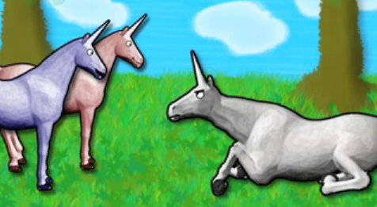
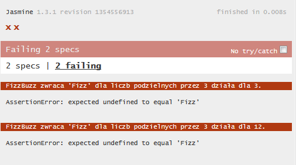
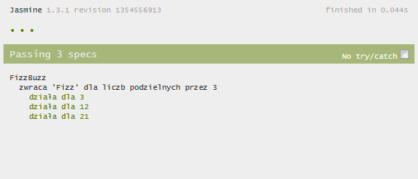
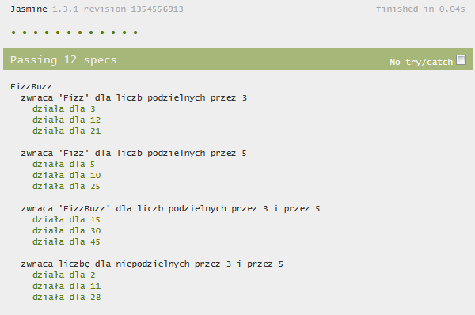

JavaScript & TDD
Webmuses@Medius
Created by Maciej Makowski / cfiet @ githubAgenda
- Czym jest TDD?
- Wprowadzenie do narzędzi
- Warsztaty
Czym jest Test Driven Development
Test-driven development (...) polega na wielokrotnym powtarzaniu kilku kroków:
- Najpierw programista pisze automatyczny test sprawdzający dodawaną funkcjonalność. Test w tym momencie nie powinien się udać.
- Później następuje implementacja funkcjonalności. W tym momencie wcześniej napisany test powinien się udać.
- W ostatnim kroku, programista dokonuje refaktoryzacji napisanego kodu, żeby spełniał on oczekiwane standardy.
W skrócie
- Test
- Implementacja
- Refactor
Czas na przykład!
Fizz buzz!
Funkcja która przyjmuje liczbę i zwraca
- Fizz dla liczb podzielnych przez 3
- Buzz dla liczb podzielnych przez 5
- FizzBuzz dla liczb podzielnych przez 3 i 5
- W pozostałych przypadkach, podaną liczbę
Funkcja powinna dzialac dla liczb z zakresu 1 do 100.
Jescze raz i TDD
- Najpierw test
- Potem implementacja
- Na koniec, refaktor

To the adventure!
FizzBuzz
Krok 1 - napisz test
describe("FizzBuzz", function () {
describe("zwraca 'Fizz' dla liczb podzielnych przez 3", function () {
it("działa dla 3", function () {
expect(fizzbuzz(3)).toBeEqual("Fizz");
});
it("działa dla 12", function () {
expect(fizzbuzz(12)).toBeEqual("Fizz");
});
});
});
FizzBuzz
Krok 2 - uruchom wszystkie testy
FizzBuzz
Krok 3 - zaimplementuj funkcjonalność
function fizzbuzz(n) {
if(n % 3 === 0) {
return "Fizz"
}
}
FizzBuzz
Krok 4 - zrefaktoruj kod
Tak testy jak i funkcjonalność
describe("FizzBuzz", function () {
describe("zwraca 'Fizz' dla liczb podzielnych przez 3", function () {
var testCases = [
3,
12,
21
],
key, value;
for(key in testCases) {
value = testCases[key]
it("działa dla " + value, function () {
expect(fizzbuzz(value).to.be.equal("Fizz");
});
}
});
});
FizzBuzz
Krok 5 - zweryfikuj zrefaktorowany kod
FizzBuzz
Powtórz poprzednie kroki
FizzBuzz
Końcowy rezultat
Zalety
Natychmiastowy feedback

Testy jako zbiór wymagań/specyfikacja (BDD)
Pozostałe zalety TDD
- Powtarzalne wyniki
- Umożliwia szybszą identyfikację miejsc, gdzie wystąpił problem
- Wymusza modularną architekturę
Wady
- Wymaga czasu, żeby zacząć
- Dodatkowy kod wymagający utrzymania
- Wydłuża czas przygotowania pierwszej implementacji
TDD - dobre praktyki
- Pojedynczy test powinien testować tylko jedno wymaganie
- Testy nie powinny być zależne pomiędzy sobą
- Testy powinny wykonywać się szybko
- Wyniki powinny być powtarzalne
- Testy powinny być uruchamiane po każdej zmianie
- "Oficjalny" kod powinien przechodzić wszystkie testy
Narzędzia
Warsztaty
Jasmine - API
define("{nazwa grupy testów}", function () {
define("{nazwa podgrupy testów}", function () {
beforeEach(function () {
// wywołane przed każdym teście
});
afterEach(function () {
// wywołane po każdym teście
});
it("{nazwa testu}", function () {
// test
});
});
});
Jasmine - asercje
expect({zmienna | operacja})
- .toBeDefined()
- .toEqual({wartość})
- .toMatch({regexp})
- .toBeNull()
- .toBeLessThan({liczba}) / .toBeGreaterThan({liczba})
- .not
expect(neverNull()).not.toEqual(null)
Sinon - spies
sinon.spy(console, "log");
callSomethingThatLogs();
expect(console.log.called).toBeTruthy();
console.log.restore();
- spy.called
- spy.calledOnce
- spy.calledWith(arg1, arg2, ...)
- spy.returned(value)
- spy1.calledBefore(spy2)
Sinon - stubs
var ajaxStub = sinon.stub(jQuery, "ajax");
ajaxStub.throws();
expect(myAjaxCaller()).not.toThrow();
ajaxStub.restore();
- stub.returns(value)
- stub.withArgs(arg1, arg2, ...).returns(value)
- spy.returned(value)